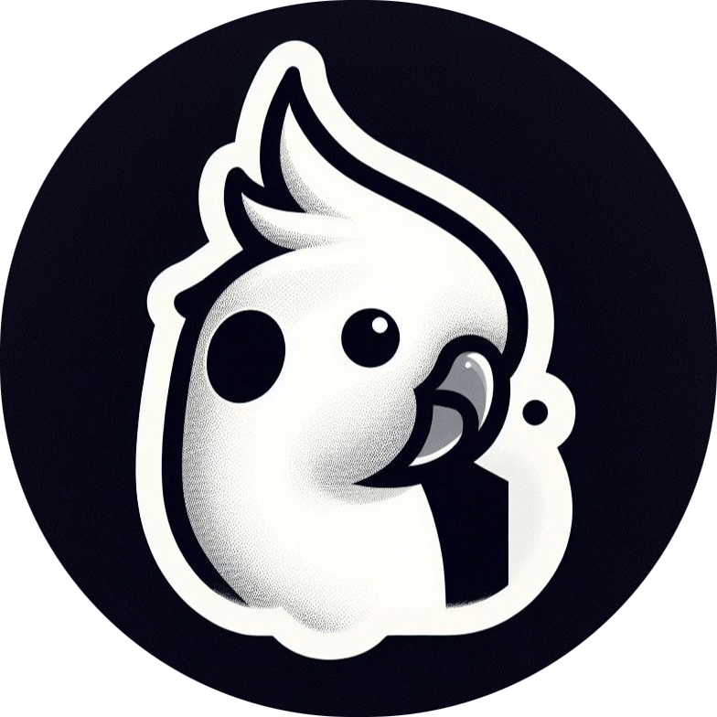
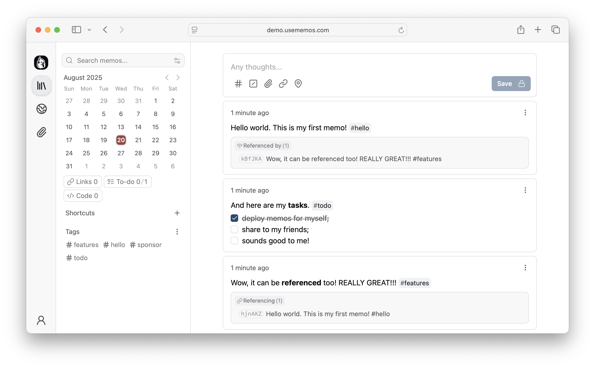

capture-firstopen / write / done
先抓住，再整理
它把“记录”变成一个极短动作：打开、写一句、保存，剩下的都留给时间线和搜索。
- 适合碎片化输入
- 适合临时灵感
- 适合日志式回看
Open-source, self-hosted note-taking tool built for quick capture. Markdown-native, lightweight, and fully yours. 它更像个人/团队的时间线收集层，而不是传统层级文件夹笔记。
最有价值的地方，不是某个花哨编辑器，而是把 capture、store、search、API 和 deploy 统合成一个轻量闭环。
画布是暖米白，中央用深色控制台承载“记录链路”，左侧讲定位，右侧讲摘要，整体是一张可读的产品架构海报。


它把“记录”变成一个极短动作：打开、写一句、保存，剩下的都留给时间线和搜索。
部署在自己的基础设施上，内容以 Markdown 形式保存，强调可迁移、可备份、可长期持有。
单一 Go 二进制、轻量部署路径、数据库后端可选，说明它是偏实战的记录底座，而不是展示型 demo。
打开就能写，适合把想法、待办、日志先收进来。
不要求你先建文件夹或先定义层级。
文本本身就是资产，能看、能迁移、能备份。
内容保持可读、可导出、可长期持有。
用时间轴和搜索把“记过什么”快速找回来。
适合回顾发生过什么，而不是只存档。
外部工具、自动化脚本、机器人都可以接上来。
不是封闭笔记本，而是可被集成的服务。
官方 README 首推 Docker，适合快速起一个可用实例，再决定是否深入定制。
如果你要本地开发或轻量部署，native binary 更适合：一条命令就能进入可用状态。
Live demo 适合快速确认体验，Docs 适合进入部署、扩展和集成细节。
临时想法、会议碎片、待办提醒、日志记录，都适合先扔进时间线入口。
小团队用它做周报、状态记录、临时知识库入口，会比手工散落在消息流里更稳定。
如果你要的是复杂数据库、强标签治理或多层审批流程，它不是最合适的主系统。
docker run -d \ --name memos \ -p 5230:5230 \ -v ~/.memos:/var/opt/memos \ neosmemo/memos:stable # Native binary curl -fsSL https://raw.githubusercontent.com/usememos/memos/main/scripts/install.sh | sh # Open APIs REST + gRPC for integration, automation, and tooling.
Memos 的价值不是“又一个笔记应用”，而是把快速记录、长期持有、接口开放和自托管部署放在同一条链路里，方便个人和团队把零散信息变成可回看的资产。
如果你要的是“先记下来，再回头整理”，它非常合适。
Markdown、可迁移、可备份、可部署，适合作为长期记录底座。
如果你追求的是复杂分类、强协作审阅和深层工作流编排，应该选别的主系统。
Published information card · based on usememos/memos